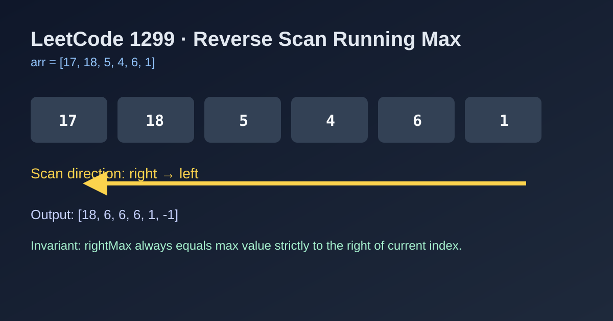

LeetCode 1299: Replace Elements with Greatest Element on Right Side (Reverse Scan Running-Max)
LeetCode 1299ArrayGreedy InvariantToday we solve LeetCode 1299 - Replace Elements with Greatest Element on Right Side.
Source: https://leetcode.com/problems/replace-elements-with-greatest-element-on-right-side/

English
Problem Summary
For each index i, replace arr[i] with the maximum value among elements to its right. The last element must become -1.
Key Insight
If you scan from left to right, you still don't know the future right-side maximum. But if you scan from right to left, you can maintain a running maximum rightMax of everything already seen on the right.
Algorithm
1) Initialize rightMax = -1.
2) Traverse the array from n-1 down to 0.
3) For current value cur: set arr[i] = rightMax, then update rightMax = max(rightMax, cur).
4) Return arr.
Complexity Analysis
Time: O(n) (single pass).
Space: O(1) extra space (in-place update).
Common Pitfalls
- Updating rightMax before writing arr[i], which overwrites with wrong value.
- Forgetting to store original arr[i] before assignment.
- Special-casing the last index unnecessarily (the invariant already handles it).
Reference Implementations (Java / Go / C++ / Python / JavaScript)
class Solution {
public int[] replaceElements(int[] arr) {
int rightMax = -1;
for (int i = arr.length - 1; i >= 0; i--) {
int cur = arr[i];
arr[i] = rightMax;
rightMax = Math.max(rightMax, cur);
}
return arr;
}
}func replaceElements(arr []int) []int {
rightMax := -1
for i := len(arr) - 1; i >= 0; i-- {
cur := arr[i]
arr[i] = rightMax
if cur > rightMax {
rightMax = cur
}
}
return arr
}class Solution {
public:
vector<int> replaceElements(vector<int>& arr) {
int rightMax = -1;
for (int i = (int)arr.size() - 1; i >= 0; --i) {
int cur = arr[i];
arr[i] = rightMax;
rightMax = max(rightMax, cur);
}
return arr;
}
};class Solution:
def replaceElements(self, arr: List[int]) -> List[int]:
right_max = -1
for i in range(len(arr) - 1, -1, -1):
cur = arr[i]
arr[i] = right_max
right_max = max(right_max, cur)
return arr/**
* @param {number[]} arr
* @return {number[]}
*/
var replaceElements = function(arr) {
let rightMax = -1;
for (let i = arr.length - 1; i >= 0; i--) {
const cur = arr[i];
arr[i] = rightMax;
rightMax = Math.max(rightMax, cur);
}
return arr;
};中文
题目概述
对数组中的每个位置 i，将 arr[i] 替换成其右侧所有元素的最大值；最后一个元素固定为 -1。
核心思路
从左往右无法提前知道“右侧最大值”，但从右往左遍历时，可以用一个变量 rightMax 维护“当前位置右侧已扫描元素的最大值”。
算法步骤
1）初始化 rightMax = -1。
2）从数组末尾向前遍历。
3）设当前值为 cur，先把 arr[i] 赋值为 rightMax，再执行 rightMax = max(rightMax, cur)。
4）遍历结束后返回数组。
复杂度分析
时间复杂度：O(n)。
空间复杂度：O(1) 额外空间（原地修改）。
常见陷阱
- 先更新 rightMax 再写回 arr[i]，会导致结果错误。
- 没有先保存旧值 cur，直接覆盖后丢失更新依据。
- 对最后一位做多余特判，增加分支复杂度。
多语言参考实现（Java / Go / C++ / Python / JavaScript）
class Solution {
public int[] replaceElements(int[] arr) {
int rightMax = -1;
for (int i = arr.length - 1; i >= 0; i--) {
int cur = arr[i];
arr[i] = rightMax;
rightMax = Math.max(rightMax, cur);
}
return arr;
}
}func replaceElements(arr []int) []int {
rightMax := -1
for i := len(arr) - 1; i >= 0; i-- {
cur := arr[i]
arr[i] = rightMax
if cur > rightMax {
rightMax = cur
}
}
return arr
}class Solution {
public:
vector<int> replaceElements(vector<int>& arr) {
int rightMax = -1;
for (int i = (int)arr.size() - 1; i >= 0; --i) {
int cur = arr[i];
arr[i] = rightMax;
rightMax = max(rightMax, cur);
}
return arr;
}
};class Solution:
def replaceElements(self, arr: List[int]) -> List[int]:
right_max = -1
for i in range(len(arr) - 1, -1, -1):
cur = arr[i]
arr[i] = right_max
right_max = max(right_max, cur)
return arr/**
* @param {number[]} arr
* @return {number[]}
*/
var replaceElements = function(arr) {
let rightMax = -1;
for (let i = arr.length - 1; i >= 0; i--) {
const cur = arr[i];
arr[i] = rightMax;
rightMax = Math.max(rightMax, cur);
}
return arr;
};
Comments